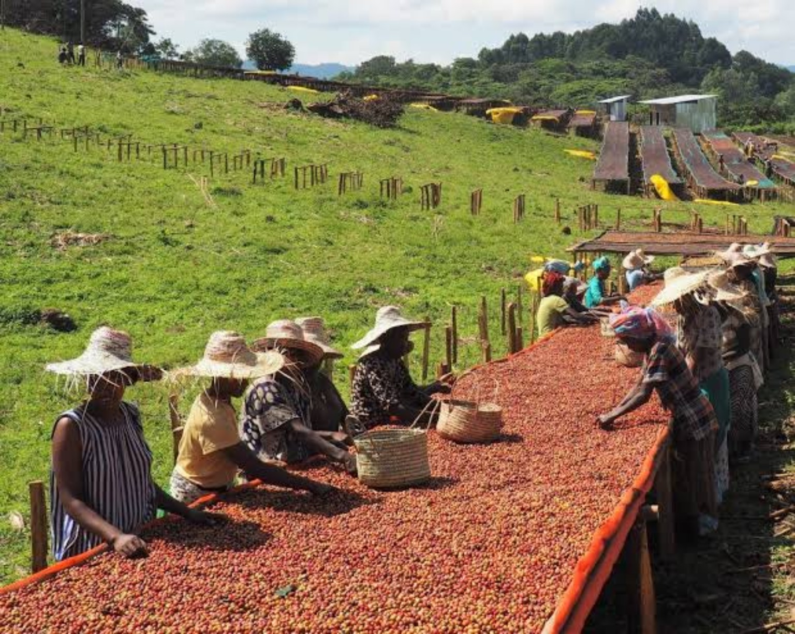
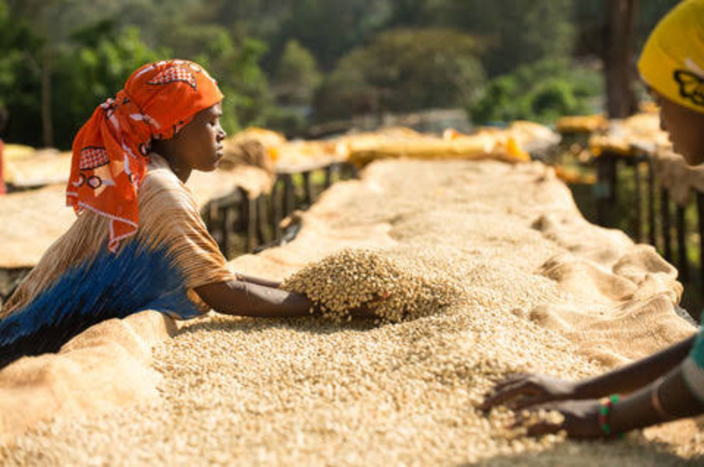
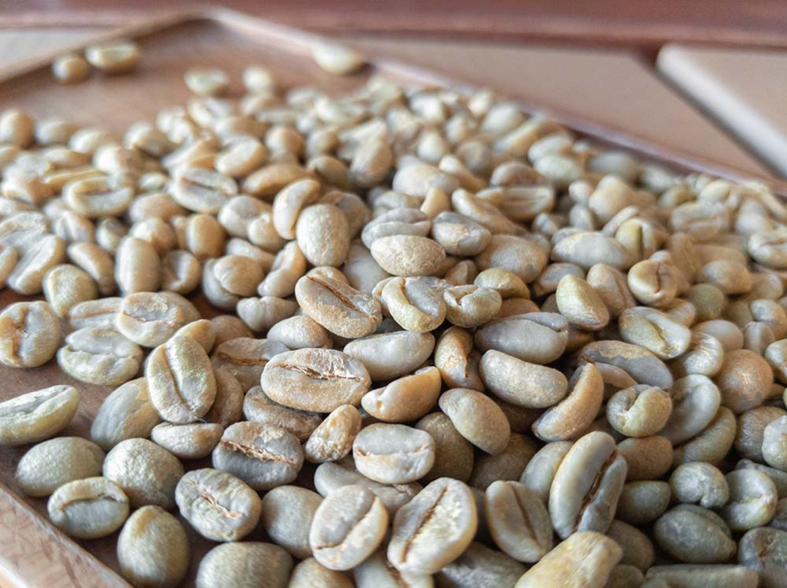

01
Grown
Arabica coffee grows on a 10-hectare forest farm beneath natural forest shade.

Meet the coffee of Tekaye Wako — a 10-hectare forest farm in Shakiso, Guji, where Arabica coffee is hand-picked, naturally processed and dried on raised beds.
TEKAYE WAKO COFFEE FARM & EXPORT is based in Shakiso, Guji, Ethiopia. The coffee comes from a 10-hectare forest farm where Arabica grows beneath natural forest shade.
The farm is more than six years old. Coffee is hand-picked, naturally processed and dried on raised beds before being prepared for buyers.

A clear story of place, farming and the person behind the coffee.
Tekaye Wako is the founder of TEKAYE WAKO COFFEE FARM & EXPORT and the farmer behind this coffee. The farm covers 10 hectares, has been established for more than six years, and grows Arabica coffee under natural forest shade.
Explore the Shakiso origin area in Guji, where TEKAYE WAKO COFFEE FARM & EXPORT cultivates Arabica under natural forest shade. The marker shows the wider origin area rather than a surveyed farm boundary.
A concise specification sheet for the current coffee.
This coffee is hand-picked, naturally processed, and dried on raised beds before export preparation.
Arabica coffee grows on a 10-hectare forest farm beneath natural forest shade.
Coffee cherries are harvested by hand before processing.
The cherries are dried slowly on raised beds to protect sweetness and cup clarity.
After drying, the coffee is prepared as export-grade green coffee and packed in 60 kg bags or agreed custom quantities.
Whether you are an importer, roaster, café, or hotel, begin with the coffee itself. Request a sample, review the lot information, and then discuss quantity and commercial terms.
A closer look at drying cherries, raised-bed drying, and export-ready green coffee.

A closer look at drying cherries, raised-bed drying, and export-ready green coffee from BUNA ORIGIN.
Share your requirements and TEKAYE WAKO COFFEE FARM & EXPORT will follow up on samples, current lots, and commercial details.
Shakiso · Guji · Ethiopia